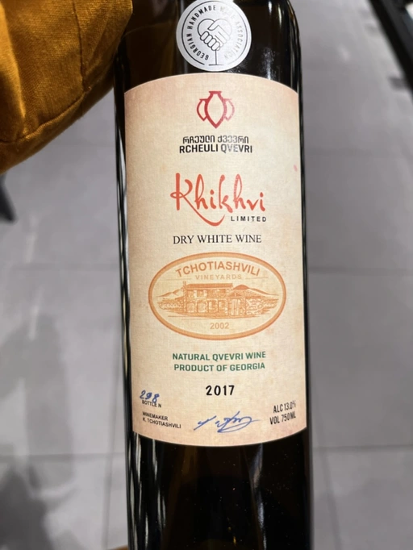

- Type
- White Still, Dry
- Producer
- Tchotiashvili
- Vintage
- 2017
- Location
- Georgia, Kakhetia
- Grapes
- Khikhvi
- Alcohol
- 13
- Sugar
- NA
- Price
- 816 UAH, 799 UAH
- Cellar
- N/A
Ratings
2022-10-13 - 8.00
Deep and multilayered orange Khikhvi. Not fruit-forward. Toffee, tea, apricot (in the process of drying), wax, honey and subtle hints of VA. Good volume, tannin is green, fresh and well balanced. Long and persistent aftertaste. What can I say? A delicious wine with some good QPR.
2022-12-04 - 8.00
A style of macerated wines that I like. Aside from being an excellent alternative to the VA and fruit-forward wines prevalent these days, it’s just a clean, sophisticated and mineral manifestation of amber wines. Gouache, a freshly sharpened pencil, toffee, tea, wax, persimmon and apricot that just started to learn about the drying process. Good volume, structure and a long flavourful aftertaste.